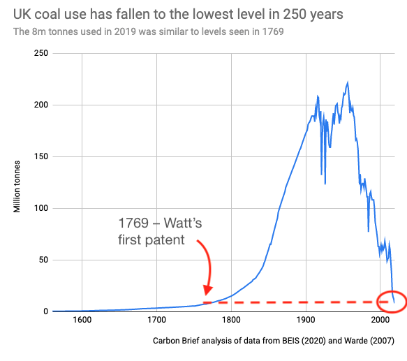

Alle Posts zur Lektüre von Abondance et liberté sind hier zu finden.
Nach jedem Kapitel stellt sich mir unweigerlich die Frage, wie ich einen neuen Post möglichst passend beginne.1 Tatsächlich konnte aber die Lektüre des vierten Kapitels, „Le nouveau régime écologique“ aber kaum zeitlich treffender sein, als zu diesem Zeitpunkt. Darin zitiert Charbonnier an einer Stelle den englischen Ökonomen William Stanley Jevons, der einen wichtigen Teil des Kapitels ausmacht, wie folgt:
"Mit der Kohle wird beinahe alles möglich und einfach; ohne sie würden wir in die Zeiten der Armut und Arbeit zurückkehren. (143)
Eine gravierende Warnung. Umso ironischer der Fakt dass, während Deutschland noch einen Ausstieg aus der Kohle stetig verschiebt, Englands Kohlenutzung auf ein Level gefallen ist, welches Jevons (1853-1882) selbst nicht erfahren hat.
 Quelle: Twitter: @DrSimEvans
Ob England nun auf ein prä—industrielles Niveau der Armut zurückfallen wird, wird sich noch zeigen, es sei zu bezweifeln. Doch wie kommt Jevons überhaupt dazu, der Kohle eine solch gravierende Rolle zuzuschreiben? Und wie entwickelt sich der Liberalismus und die im 18. Jahrhundert „entdeckten“ Werte der Freiheit und Gleichheit weiter?
Der Grafik oben zu entnehmen besteht kein Zweifel an der revolutionären Umbrüche, die die Kohle für das Europa des 19. Jahrhunderts darstellte, können wir darin doch den rasantesten Zuwachs an Kohlenutzung darin erkennen. Wenn man die Verwendung der Kohle betrachtet, so Charbonnier, muss man erkennen, dass das was für gewöhnlich als Geburt der Moderne, hervorgerufen durch „das Recht und das Ideal der zivilen Gleichheit“ (130), nur einen Teil der Geschichte darstellt. Man müsse zwangsläufig die Einführung eines neuen ökologischen Regimes in Form der Kohlekraft berücksichtigen, das die Gesellschaften des 18. Jahrhunderts maßgeblich verändert hat. (131)
Bemerkenswert ist dabei, dass der im 18. Jahrhundert entstandene und in Mode gekommene Liberalismus sich auch weiterhin, trotz rückblickend (und auch nicht rückblickend, wie wir sehen werden) offensichtlicher Widersprüchlichkeiten, als dominante Form der politischen Ökonomie durchgesetzt hat. Charbonnier weist hier auf den aus der Biologie stammenden Begriff der exaptation hin:
„Dieser Begriff beschreibt einen Prozess in dessen Verlauf eine gegebene, mit einer Funktion assoziierten, Form (zum Beispiel eine Oberfläche, die der Thermoregulation eines Tieres dient) durch eine Reihe von Mutationen und kontingenten ökologischen Begenungen eine neue Funktion annimmt (diese Oberfläche wird zu einem Flügel), die die eine vervollständigt oder ersetzt.“ (132)
Der Liberalismus würde daher auf eine ökonomische und ökologische Basis angewandt, die nicht die seiner Entstehung ist, mit der er sich aber entwickelt hat. Dabei ist zu beachten, dass die Exaptation des Liberalismus nicht unbedingt ein sozusagen evolutionärer Erfolg war (wie sich im weiteren Verlauf des Buches zeigen wird).
Festzuhalten ist jedoch, das die Kohle im Zusammenspiel mit den Formen der politischen Ökonomie eben nicht nur eine materielle Revolution darstellt, sondern auch eine politische und soziale, die die Beziehung zwischen Überfluss und Autonomie vor neue und alte Herausforderungen stellt.
Die Grenzen der Autonomie
Wie können wir also die Autonomie fassbar machen? Im Denken des Historikers Francois Guizot finden wir anschaulich das wahrhaft welterschütternde Ausmaß der Autonomie im 19. Jahrhundert:
„Politische Institutionen, zivile Gesetze, Religion, Philosophie, Moral, kommerzielle, diplomatische und häusliche Beziehungen, Meinungen, Interessen, Gewohnheiten, der Staat, die Familien, die Individuen, alles müsse neu geschaffen werden; alles war bislang das Produkt einer blinden Macht; alles müsse das Schaffen der Vernunft sein.“ (137)
Es wird klar ersichtlich, wie durchdringend die „unbegrenzte Macht des Volkes“ (ebd.) in allen Aspekten des öffentlichen und privaten Lebens sei. Den Denkern und Revolutionären ging es nicht nur um die Ersetzung eines heteronomen Souveräns (König, Gott oder sonstiges) durch ein anderes Souverän, sondern um die grundsätzliche Umstrukturierung der Gesellschaft, „[anhand der] rationalen Prinzipien des Geistes“. (ebd.) Das revolutionäre Ideal der Autonomie erkennt keine politische Autorität außer der „raison publique“ (138) als legitim an. Wie wir bereits im ersten Post gesehen haben, gilt eine autonome Gesellschaft als Gesellschaft, die sich von innen heraus ihre eigenen Gesetze gibt.
Hierin liegt ein fundamentaler Umschwung im politischen Denken des 19. Jahrhunderts, worin das Streben nach Autonomie eine Unterscheidung zwischen einem innerhalb und einem außerhalb der Gesellschaft auf den Plan gerufen hat. Im Innern der autonomen Gesellschaft stehen die Regeln, Rechte, Ideale und Gesetze, die für all ihre Bürger gelten, sowie die Mächte, die die Zukunft der Gesellschaft bestimmten. Wie im ersten Post geschrieben, folgt daraus, dass selbst wenn die autonome Gesellschaft sich zwar in einer (materiellen) Beziehung mit einem Außen2 befindet - die Möglichkeiten und Beschränkungen beinhaltet -, diese die ideale autonome Gesellschaft niemals in ihrem inneren Organisationsprinzip, in ihrer politischen Identität der Freiheit und Gleichheit, beeinflussen kann. Das Projekt der autonomen Gesellschaft strebt also folgerichtig nach der Minimierung der externen Zwänge und Beziehungen.
Welche Rolle spielt hierbei nun die Kohle? Kohlekraft ist selbstverständlich noch heute in aller (naja, meister) Munde, wir erinnern uns auch an die Formulierung Charbonniers aus dem ersten Kapitel: „Über unseren Köpfen sammelt sich also die Asche der industriellen Freiheit an.“ (17) Doch auch ohne die atmosphärische Bedrohung, die die Nutzung der Kohle mit sich bringt, offenbart sie, neben ihrem revolutionären Nutzen, auch eine ganz simple, aber umso faszinierendere Eigenschaft: Die Kohle stellt eine Form der Energie dar, die sich als Vorrat („stock“) und nicht als Fluss („flux“, 146) offenbart. Sie ist damit insofern von herkömmlichen Formen der Energie (Wasser, Wind, Arbeitskraft) zu unterscheiden, als sie so eine quantifizierbare Größe darstellt, wird somit zu einem „«etwas», das man trennen kann vom Leben, von der Arbeit, vom Raum.“ (ebd.)
Und hier kommen wir nun auf den eingangs zitierten Jevons zurück, der in der Kohle einerseits die beinahe unbegrenzten Möglichkeiten sieht, im selben Werk (The Coal Question) aber auf dessen inhärente Gefahr und Begrenzung hinweist. Für das England des 19. Jahrhunderts stellt die Kohle sozusagen gleichermaßen Fluch, wie Segen dar. Einerseits bewege es sich durch die Nutzung der Kohlekraft in ein so noch nie da gewesenes Wachstum, gehe damit aber andererseits eine ebenso radikale und fragile Abhängigkeit ein. Jevons demonstriert eindrücklich die Möglichkeit eines „energetischen lock-ins“3 (148), mit dem Hinweis, dass die Energienutzung Englands im Jahre 1865 einer Waldnutzung mit der zweieinhalbfachen Fläche Englands entspricht. In Bezug auf die damals wohl bekannte, und wie Jevons zeigt, bewusste Begrenztheit des Kohlevorkommens bedeutet das, dass das England des 19. Jahrhunderts sich tatsächlich in einem Wettlauf gegen die Zeit befand. Charbonnier greift hier erneut auf die bereits angesprochene Metapher des Überhangs zurück: „Zusammengefasst, sobald die Kohle aufgebraucht oder ihren kommerziellen Wert verloren hat, kann England niemals dieses Wachstum auf Basis seiner eigenen Ressourcen aufrechterhalten.“ (ebd.) Hinzu kommen sowohl noch ein explosives Bevölkerungswachstum, sowie der wenig wünschenswerte Export - „Wer würde tatsächlich den Motor der Zivilisation gegen Geld eintauschen wollen?“ (ebd.) - der Kohle.
Das England Jevons ist daher tatsächlich in der prekären Situation, dass es einerseits einen enormen Wirtschafts- und Gesellschaftswachstum durch die Kohle erfährt, durch dieses Wachstum aber in einer Situation ist, wo es keine andere Möglichkeit als die Nutzung der Kohle mehr hat. England befindet sich in einem „Zustand der Unterwerfung“ („état de servitude“, 149). Diese Situation war zu diesem Zeitpunkt einzigartig, wo die „Quasi-Totalität des operationalen und produktiven technischen Netzwerks von einer einzigartigen Energiequelle abhängen, deren Vorräte begrenzt sind.“ (ebd.)
Wir haben also auf der einen Seite, auf der Seite Guizots, die autonome Gesellschaft mit ihren Gesetzen und Werten, die durch und durch innerlich sind. Die autonome Gesellschaft wird von innen heraus bestimmt, steht zwar im Zusammenhang mit Externalitäten, diese können sie aber nie bestimmen oder verändern. Andererseits entdecken wir mit Jevons die radikale Begrenztheit des gesellschaftlichen Wachstums, infolgedessen die Gesellschaft in einer knebelartigen Abhängigkeit mit ihrer materiellen Basis ist.
Abgesehen von der materiellen Basis in Form der Kohlekraft kommt aber noch erschwerend hinzu, dass sich im 19. Jahrhundert noch bedeutend andere Abhängigkeiten dazugesellten, in dem die internationalen Beziehungen vorrangig europazentrisch ist. Anders gesagt: „Das Spiel ist in Europa, aber auf dem Spiel steht die Welt.“ (Foucault, 2002: 58. Eigene Übersetzung) Der Kolonialismus offenbart nicht nur eine moralische Asymmetrie zwischen dem Europa der Werten wie Gleichheit und Freiheit und den kolonisierten und versklavten Staaten, sondern auch eine vergleichbare (zynisch gesagt) materielle Abhängigkeit mit „den Körpern, den Kulturen und den Böden, die sich im Rest der Welt erschöpfen.“ (153)
Autonomie-Extraktion
Die Frage ist also, wie sich der Liberalismus und die Werte der Freiheit und Gleichheit gegen solche Abhängigkeiten und Asymmetrien behaupten konnten. In welcher Beziehung stehen der Gesellschaft intrinsische Werte wie Freiheit und Gleichheit, die das politische Projekt der Moderne dominier(t)en zu den Realitäten, die ihnen den Spiegel vorhalten?
Mit Tocqueville führt Charbonnier hier den Begriff, beziehungsweise das Begriffspaar, der Autonomie-Extraktion ein. Die Autonomie, deren Ziel eine Gesetzgebung von innen heraus ist, sei demnach bloß konzeptuell haltbar. „Ihr «extraktiver» Charakter entspringt tatsächlich aus ihrer Begegnung mit der Realität“ (157), in der Paradoxien wie eben die ökologische Abhängigkeit mit der Kohle oder der widersprüchlichen und zynischen Verwertung der Grenzgebiete. Tocqueville beschreibt hier nach einer Amerikareise dieses als beinahe utopisches Freiheitsparadies, wo Grundsätze wie Gleichheit und Freiheit „gleich einer zweiten Natur integriert werden“ (ebd.), folgt dies aber mit einer ebenso eindrücklichen wie verräterischen Hypothese:
„Was wenn es hingegen der natürliche Reichtum des amerikanischen Territoriums wäre, der die Entstehung einer demokratischen Gesellschaft ermöglichte? Anders gesagt, in Worten, die nicht die seinen sind, gibt es ökologische Voraussetzungen für Gleichheit und Freiheit?“ (158)
Charbonnier beschreibt diesen Gedanken Tocquevilles als heutzutage wenig radikal, „für einen Liberalen des 19. Jahrhunderts wie Tocqueville [aber] wie der Verrat eines kleinen Geheimnisses“ (159). So seien trotz allen Beteuerungen nicht die demokratische Gleichheit und Freiheit, also die oben angesprochenen von innen heraus gegebenen Rechte und Prinzipien, die der Vernunft entsprangen, Grund für Reichtum, Wohlstand und Wachstum, sondern nur „Sekundäreffekt eines natürlichen Überflusses“ (ebd.). Hiermit wird ersichtlich, dass die Spannungen durch materielle Limits und die Paradoxien durch den Kolonialismus weniger Widersprüchlichkeiten im Projekt der Moderne entlarven, denn folgerichtige Aspekte des grundsätzlichen Projekts darstellen.
Cover-Bild: University of Washington: Workers at the Gilman Coal Mine Issaquah, between 1892-1899
.jpg){kind=link}
Literatur
Foucault, Michel (2004): Sécurité, territoire, population. Cours au Collège de France. 1977-1978. Seuil/Gallimard.